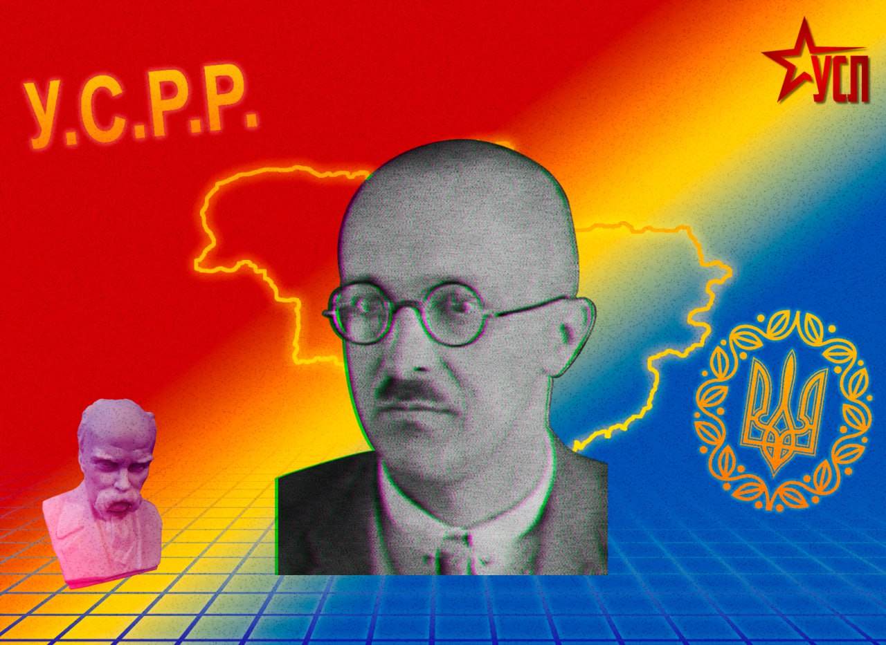

Андрій Річицький: інтелектуал, що хотів примирити соціалістичну перспективу із волею України
В історії українського лівого руху початку ХХ століття були постаті надзвичайно складні та суперечливі. Деякі з них зробили кар’єру всередині радянської системи, інші обрали шлях еміграції, а багатьох чекала трагічна доля - репресії та забуття. Серед тих, хто щиро намагався поєднати, здавалося б, непоєднуване з точки зору звичайних імперських великодержавних обивателів «лівих середовищ» - комуністичну ідеологію та прагнення української державної самостійності - виділяється постать Андрія Річицького (справжнє ім’я - Андрій Пісоцький). Його славетний політичний шлях розпочався у вирі подій 1917-1920 років, але згодом його ім’я майже стерли з офіційного сталіністського наративу історії. Цим матеріалом зроблю невеличку пам’ятку-згадку про цю дійсно видатну та непересічну постать українського соціалістичного руху. Андрій Річицький був дуже талановитий та працелюбний письменник, літературний критик та марксистський історик. Зокрема, він написав книгу про Тараса Шевченка та його твори з соціологічного марксистського підходу (1923), збірку статей, що критикують Володимира Винниченка як письменника та політика (1928), полемічну та вкрай цікаву критику поглядів відомого українського марксистського економіста Михайла Волобуєва (1928), буклет про Центральну Раду (1928), монографію про основи українознавства (1929). Різноманітність інтересів Річицького викликає захоплення. Він також відредагував перше українське видання «Капітала» Карла Маркса (1927-1929). Після його репресій у сталінські часи всі його роботи були заборонені в радянській Україні та вилучені з публічного доступу в бібліотеках.
Формування поглядів.
Андрій Річицький народився 1893 року на Катеринославщині в заможній селянській родині. Його дитинство припало на час глибоких змін: модернізація імперії, зростання соціальної напруги та поширення революційних ідей. Освіту він здобував у Петровській сільськогосподарській академії в Москві. Саме там, серед студентських дискусій про Маркса, національне питання та майбутнє імперії, остаточно сформувалися його соціал-демократичні переконання. Революція 1917 року відкрила перед молодим інтелектуалом можливість не лише міркувати, а й діяти. Після Лютневої революції він долучився до українського політичного руху й став членом Української соціал-демократичної робітничої партії (УСДРП). Згодом його обрали до Центральної Ради - представницького органу, що намагався створити українську державність у вирі розпаду імперії. Андрій Річицький входив і до Малої Ради УСДРП, тобто був серед тих, хто ухвалював ключові партійні рішення.Після гетьманату.
Після встановлення влади Павла Скоропадського активіст УСДРП Андрій Річицький, звісно, не підтримав гетьманський режим і перебував в опозиції. А загалом події 1918-1919 років цілком та остаточно переконали його в тому, що український соціалістичний рух потребує окремої політичної стратегії. На початку 1919 року він став одним із організаторів створення на базі лівого крила «незалежників» в УСДРП Української комуністичної партії (УКП). Ця політична сила виникла як альтернатива більшовицькій партійній структурі в Україні й наполягала на тому, що українська комуністична організація не може бути лише регіональним відділенням російської партії.
У спільному проєкті програми УКП 1919 року Андрій Річицький писав:
“У.К.П. піддержує незалежність і самостійність економичного й політичного порядковання Української Соціялістичної Радянської Республіки… для всестороннього і неустанного розвою продукційних сил Українського економічного організму.” Разом із Михайлом Ткаченком Андрій Річицький брав участь у розробленні програмних засад УКП. У центрі їхніх вимог було визнання України окремим політичним суб’єктом - із власною партійною організацією, військовими структурами та самостійною економічною політикою. На сторінках партійного видання УКП «Червоний прапор» Річицький системно обґрунтовував тезу про те, що революція в Україні не може бути «експортованою» ззовні. Вона повинна спиратися на місцеві соціальні реалії, на селянство та робітництво України.
Ідеологія та критика
Гостра критика централізаторської більшовицької політики щодо України була одним із головних меседжів Андрія Річицького як одного з редакторів партійного органу «Червоний прапор». У документах УКП наголошували: «Більшовицька політика в Україні… не може бути ефективною, бо вона не вирішує національного питання та не відповідає потребам українського робітничого і селянського класу.»
Місце в історії
Історія українських «незалежників» того часу завершилася поразкою. Московський більшовицький центр не допустив існування окремої української комуністичної партії. Подання УКП на вступ до Комінтерну через позицію російських комуністів було проігноровано та УКП отримала відмову. Підставою відмови була позиція що від однієї країни може в Комінтерні бути лише одна партія, а така партія вже була – КПБ(у). У 1920-х роках УКП через тиск була змушена самоліквідуватися, а її членів вимушено інтегрували до офіційної КПБ(у)шної партійної структури. Доля самого Андрія Річицького, як і багатьох діячів революційної доби, виявилася трагічною - у 1930-х роках він став жертвою сталінських репресій. Проте його ідеї, спроба діалектично поєднати соціальну справедливість і право українського народу на державну самостійність та своє самовизначення, залишаються й зараз тим каменем спотикання, що знов і знов примушує нас ламати списи у справедливій боротьбі з різноманітними імперсько-шовіністичними покидьками від «руського миру». Андрій Річицький не був ані беззастережним націоналістом, ані ортодоксальним більшовиком-сталіністом. Він належав до того славетного покоління українських революціонерів-соціалістів, яке щиро вірило, що народна свобода і соціальна справедливість можуть існувати разом і поруч та готові були за це боротися. Боротися до кінця. Боротися до самої смерті…